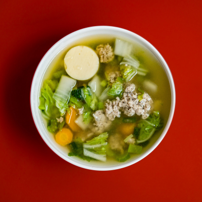

My Favorite Food

Chicken Noodle Soup
This is a delicious and easy recipe to make.
Ingredients
- Butter
- Onion
- Celery
- Chicken broth
- Cooked chicken
- Egg noodles
- Carrots
- Oregano
Directions
- In a large pot over medium heat, melt butter.
- Cook onion and celery in butter until just tender, 5 minutes.
- Pour in chicken and vegetable broths and stir in chicken, noodles, carrots, basil, oregano, salt and pepper.
- Bring to a boil, then reduce heat and simmer 20 minutes before serving.
For more information, take a look at this recipe.